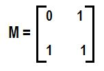

Binary Exponentiation
by-Shravan Kumar Verma
DATE:29/02/2020
Hello geeks!
Given two number a,b and task is find the ab.
example:
a=2
b=5
then answer should be-
25=32
Basic method :
While calculating 25, the most basic solution is broken down into 2*25-1.The new problem is 25-1, which is similar to the original problem. Therefore,like in original problem, it is further broken down to 2*2*25-3 and so on.
let's code for it.
int Fast_pow(int a,int n)
{
int ans=1;
while(n>0)
{
ans=ans*a;
n=n-1; //decrese the value of n by 1
}
return ans;
}
Time complexity :
With respect to time complexity, it is a fairly efficient O(b) solution. However, when it comes to finding ab, where b can be as large as 1018 , this solution will not be suitable.
Let's optimize our method.
While calculating ab , the basis of Binary Exponentiation relies on whether b is odd or even.
If b is even we can broke ab to (a2)b/2.Finding a2is very easy process. However, the problem is to find to (a2)b/2 .So,we can reduced b to b/2 continuously until it becomes odd.like that ((((a2)2)b/4)........)1If b is odd then it can be broke like a*ab-1,now b-1 become even then by above method it can be further broken.
Let's see an example :-
You are reqired to find 210.Then it can be done like follows:
Here b=10 is even
then break it into (22)10/2=>45
now a=4
and b=5
b=5 is odd now,then it's break like 4*44=>4*(42)2=>4*(16)2 and the final step is 4*16*16=> 1024 At every step, b is divided by 2 . Therefore, the time complexity is O(log b).
see below the implimantation of C++ program
**comment below if you found any error or want to gives suggestions
#include <stdio.h> int Fast_pow(int a,int n) { int ans=1; while(n>0) { //check that power is even or not if(n & 1) ans=ans*a; //shift the bit of a number(i.e. divide it by 2) n=n>>1; a= a*a; //here we find a2 } return ans; } // call function from main function int main() { int a=2; int b=5; int ans=Fast_pow(a,b); printf("%d pow %d is= %d",a,b,ans); return 0; }
Hello geeks! Given a number n and task is find the factorial of n. The factorial of a number is the product of all the integers from 1 to that number. example: n=5 5!=5*4*3*2*1 This is very simple to implement. Now its fun to implement this mathematical calculation via C program. Time complexity : With respect to time complexity, it is a fairly efficient O(n) solution. see below the implimantation of C program **comment below if you found any error or want to gives suggestions
#include <stdio.h> int main() { int n=5; int i,fact; for(i=1;i<=n;i++) { fact=fact*i; //it happen again and again untill loop is terminate. } printf("factorial of %d is = %d",n,fact); return 0; }

Hello geeks!
A linked list is a linear data structure, in which the elements are not stored at contiguous memory locations. The elements in a linked list are linked using pointers as shown in the below image:
In each image block is known as node.Each node contain two thing-
1.Data
2.A link to next node.After last node there is no node so last node contain NULL.
Linked lists are among the simplest and most common data structures. They can be used to implement several other common abstract data types, including lists, stacks, queues, associative arrays, and S-expressions, though it is not uncommon to implement those data structures directly without using a linked list as the basis.
Advantages
1. Dynamic size
2. Ease of insertion/deletion
Disadvantages
1.They use more memory than arrays because of the storage used by their pointers.
2.Nodes in a linked list must be read in order from the beginning as linked lists are inherently sequential access.
3.Nodes are stored noncontiguously, greatly increasing the time
periods required to access individual elements within the list, especially with a CPU cache.
4.Difficulties arise in linked lists when it comes to reverse traversing. For instance,singly-linked lists are cumbersome to navigate backward and while doubly linked lists are somewhat easier to read, memory is consumed in allocating space for a back-pointer.
For implimantation of linked list first we have to built node.Let's implimant linked list through c langauge.
Insert data in linked list at first.
The new node is always added before the head of the given Linked List. And newly added node becomes the new head of the Linked List. For example if the given Linked List is 2--> 1 and we add an item 3 at the front, then the Linked List becomes 3--> 2--> 1.
See the pic below for understanding--
 **comment below if you found any error or want to gives suggestions
**comment below if you found any error or want to gives suggestions
#include <stdio.h> #include <stdlib.h> //let's create Node by using struct struct Node { int data; //This is self reference of Node,means point same type of node. struct Node* next; }; int main() { struct Node* head=NULL; for(int i=1;i<4;i++) { struct Node* temp=(struct node *)malloc(sizeof(struct Node)); temp->data=i; temp->next=head; head=temp; } printf(" The data of linked list is"); while(head!=NULL) { printf(" %d ",head->data); head=head->next; } return 0; }

Hello geeks!
Dynamic Programming is one of the most important concepts of programming as it can greatly optimize a problem by reducing its execution time.
Dynamic Programming can be used whenever recursion is involved (whenever a problem can be broken into smaller sub-problems) as it works by storing the result of smaller sub-problems so that they don’t need to be computed again when needed.
The most basic example of Dynamic Programming is in the calculation of Fibonacci Numbers. The recursive approach takes exponential time while the DP optimization brings the complexity down to linear time.
Dynamic Programming has some classical problems and one of those is the Knapsack Problem. It has two variants, The 0-1 Knapsack Problem and The Fractional Knapsack Problem.
Knapsack Problem:
You have a knapsack that can hold a maximum weight W.You also have n articles with their weights being W 1 , W 2 ...W n . The articles also have a value associated with them
with the values being V 1 , V 2 … V n . The task is to put these articles in the Knapsack in such a way that the total weight of the articles doesn’t exceed W and sum of the values of the chosen articles is maximized.
Naïve approach:
One approach to this problem would involve considering all the 2n subsets and then picking the one which gives the maximum value. This approach would have an exponential time complexity
Using DP:
Dynamic Programming reduces the complexity of the problem to O (W*N), where W is the maximum capacity of the knapsack while N is the number of articles.
We take a 2D array having dimensions (N+1)*(W+1). The ith row considers the first i articles while the jth column considers the weight of the knapsack to be j.
Example:
W=5 N=3
V[]={6, 10, 12}
Wt[]={2, 1, 3}
The resulting DP table will be shown in fig--:
See below for sudo code.
**comment below if you found any error or want to gives suggestions
#include <stdio.h> int knapsack(int wt[],int v[],int n) { int dp[n+1][w+1]; for(int i=0;i<=n;i++) // articles 1 to n { for(int j=0;j<=w;j++) // for all weights from 1 to w { if(i==0 or j==0) dp[i][j]=0; // base case else if(wt[i-1]<=j) // weight of (i-1)th article is less than or equal to j dp[i][j]=max(dp[i-1][j-wt[i-1]]+v[i-1],dp[i-1][j]); // recursive statement else dp[i][j]=dp[i-1][j]; } } return dp[n][w]; // the last cell will contain the case of all articles and all weights and thus will have the answer }
Hello geeks! Read question here Disclaimer : I will try to explain what should be your step- wise thought process for solving this question. Thinking in this way helps us to do similar problems in future. Proceed with understanding one point at a time and move on to the next only after getting a clear understanding of the previous point. Lets begin! 1.Is it possible to list out all the data nodes? If yes, then we could think of choosing the reachable ones from the list. Constraints are important here. If you are able to notice that the minimum value of a is 2 and the maximum x coordinate is 1016. If we just Double each time , we will have maximum log(1016) = 53 data nodes.Base of log is 2. 2.Now, you have a list of data nodes, it is important to observe that all the nodes that could be visited would be a segment from this list because in this list data elements are sorted. 3.Trap would be trying to get to the *fastest node(z) first and then trying to go to its left or right, this will fail because it might be possible that we reach extreme left or extreme right and then more time is left in which we could have taken more data nodes from the right of z. 4.If you observe, there will be another issue,if we fix our z as the fastest possible node, then it is possible that we will need to traverse some section twice in which time will be wasted. 5.SO, WE BOIL DOWN TO THE FACT that we will consider each l and r possible as the first node to reach in this data nodes set . If it is possible to reach either l or r and traverse the length l to r in time less or equal to t, then we will update the answer. 6.Basically, we have to make the first visited node as l or r. *fastest node(z)is the data node in the list which is closest to starting point Read the tutorial for proof of why l or r should be the starting node.here See below for C++ code. **comment below if you found any error or want to gives suggestions
#include <bits/stdc++.h> using namespace std; int main() { ll x0,y0,ax,ay,bx,by,xs,ys,t; cin>>x0>>y0>>ax>>ay>>bx>>by>>xs>>ys>>t; int ans = 0; //stores all data nodes vector <pair<ll,ll> > nodes; ll x = x0,y = y0; while( x <= 3e16 && y <= 3e16 ) { nodes.push_back(make_pair(x,y)); x = (ax*x) + bx; y= (ay*y) + by; } int n = nodes.size(); //Trying out all possible segments for(int l = 0; l < n ;l++ ) { for(int r = l ; r < n ; r++) { //Time to reach l from starting point ll leftTime = abs(nodes[l].first - xs)+abs(nodes[l].second -ys); //Time to reach r from starting point ll rightTime = abs(nodes[r].first - xs)+abs(nodes[r].second -ys); //Time to reach r from l ll traversalTime = abs(nodes[l].first -nodes[r].first )+abs(nodes[l].second -nodes[r].second); //If it is possible to cover the l to r in any of the two ways in less than t time, // we will update our answer if( (traversalTime + rightTime <=t) || (traversalTime + leftTime <=t)) ans= max(ans,r-l+1);; } return 0; }
Hello geeks!
Introduction:
A graph is an abstract data structure that is used to implement the mathematical concept of graphs. It is basically a collection of vertices (also called nodes) and edges that connect these vertices. A graph is often viewed as a generalization of the tree structure, where instead of having a purely parent-to-child relationship between tree nodes, any kind of complex relationship can exist.
Definition:
A graph G is defined as an ordered set (V, E), where V(G) represents the set of vertices and E(G) represents the edges that connect these vertices.Figure-1 shows a graph with V(G) = {A, B, C, D and E} and E(G) = {(A, B), (B, C), (A, D), (B, D), (D, E), (C, E)}. Note that there are five vertices or nodes and six edges in the graph.
A graph can be directed or undirected. In an undirected graph, edges do not have any direction associated with them. That is, if an edge is drawn between nodes A and B, then the nodes can be traversed from A to B as well as from B to A. Figure-1 shows an undirected graph because it does not give any information about the direction of the edges. Look at Figure-2 which shows a directed graph. In a directed graph, edges form an ordered pair. If there is an edge from A to B, then there is a path from A to B but not from B to A. The edge (A, B) is said to initiate from node A (also known as initial node) and terminate at node B (terminal node).
Figure-1

Figure-2
Representation of graphs:
There are two common ways of storing graphs in the computer’s memory.
1.Adjacency matrix representation
Adjacency Matrix is a 2D array of size V x V where V is the number of vertices in a graph. Let the 2D array be adj[][], a slot adj[i][j] = 1 indicates that there is an edge from vertex i to vertex j. Adjacency matrix for undirected graph is always symmetric. Adjacency Matrix is also used to represent weighted graphs. If adj[i][j] = w, then there is an edge from vertex i to vertex j with weight w.

// A simple representation of graph using STL #include<bits/stdc++.h> using namespace std; // A utility function to add an edge in an // undirected graph. void addEdge(vector<int> adj[], int u, int v) { adj[u].push_back(v); adj[v].push_back(u); } // A utility function to print the adjacency list // representation of graph void printGraph(vector<int> adj[], int V) { for (int v = 0; v < V; ++v) { cout << "\n Adjacency list of vertex " << v << "\n head "; for (auto x : adj[v]) cout << "-> " << x; printf("\n"); } } int main() { int V = 5; vector<int> adj[V]; addEdge(adj, 0, 1); addEdge(adj, 0, 4); addEdge(adj, 1, 2); addEdge(adj, 1, 3); addEdge(adj, 1, 4); addEdge(adj, 2, 3); addEdge(adj, 3, 4); printGraph(adj, V); return 0; }
Hello geeks! Introduction: Traversal of graph means visiting each vertex of the graph exactly once in a specific order. There are two algorithms of graph traversal:- 1.BFS 2.DFS DFS: DFS(Depth First Search) uses the concept of backtracking.Starting from a distinguished source vertex.Every time dfs hits a branching point ,dfs will choose one of the unvisited neighbor(s) and visit this neighbor vertex.dfs repeats this process and goes deeper until it reaches a vertex where it cannot go any deeper.when this happens , dfs will backtrack and explore another unvisited neighbor(s) , if any. initially we mark all vertex unvisited and create an adjacency list of graph.when we discover a vertex v then we mark it unvisited.The node which is visited is marked with orange color. BFS: Starting from a distinguished source vertex.bfs will visit vertices that are the direct neighbor of the source vertex (first layer ) , neighbors of the direct neighbor (second layer) and so on ,layer by layer. initially we mark all vertex unvisited and create an adjacency list of graph.when we discover a vertex v then we mark it unvisited. The node which is visited is marked with orange color. see below for code of dfs and bfs-- **comment below if you found any error or want to gives suggestions
//DFS function in cpp bool visited[100]; vector<int> adj[100]; void dfs(int u) { visited[u]=true; for(int i=0;i<adj[u].size();i++) { //explore all neighbour of node u if(!visited[adj[u][i]]) { //if node adj[u][i] is not visited //call the dfs function dfs(adj[u][i]); } } }
//bfs function bool visited[100]; vector<int> adj[100]; void bfs(int u) { queue <int> q; q.push(u); visited[u]=true; while(!q.empty()) { int p = q.front(); q.pop(); for(int i=0; i<adj[p].size();i++) { //visit every unvisited child of //node p if(visited[adj[p][i]] == false) { //push the child into queue //and mark them visited q.push(adj[p][i]); visited[adj[p][i]] = true; } } } }
Hello geeks! Introduction: the traditional method to find prime number has high complexity to overcome this traditional method. We will discuss about one the most efficient method to print prime number i.e. "Sieve Of Eratosthenes" Lets discuss about Sieve Of Eratosthenes: The sieve of Eratosthenes is a simple and efficient algorithm for finding all prime numbers up to any given limit. To find all the prime numbers less than or equal to a given integer n by Eratosthenes method. Steps: 1.Create a list of consecutive integers from 2 to n: (2, 3, 4, …, n). 2.Initially, let p equal 2, the first prime number. 3.Starting from p2, count up in increments of p and mark each of these numbers greater than or equal to p2 itself in the list. These numbers will be p(p+1), p(p+2), p(p+3), etc.. 4.Find the first number greater than p in the list that is not marked. If there was no such number, stop. Otherwise, let p now equal this number (which is the next prime), and repeat from step 3. Example: 1.The smallest prime number is 2.create the list of consecutive integer upto n,i.e upto we has print prime number. Let take n=10; list=2,3,4,5,5,6,7,8,9,10; 2.Now,intiate with p=2,remove all number upto n that is divided by 2 and are greater than or equal to the square of it. smallest prime number is 2. now,remove all number between 2 and 10; then after that list= 2,3,5,7,9; 3.Take next number from list i.e is p,now remove the all number that is divided by p and are greater than or equal to the square of it; now,remove all number from list which is divided by 3. then list =2,3,5,7 4.Again,take next number from list i.e p,now remove the all number that is divided by p and are greater than or equal to the square of it; again p=5 remove all number is divided by 4; then list=2,3,5,7; 5..Continuosly take next number from list i.e p and division of list of number is continue upto p=n; 6.The number which is left in the list is prime number. finally list =2,3,5,7; that is prime number. Hope you understand.... **comment below if you found any error or want to gives suggestions
#include<stdio.h> int main() { int n; printf("Enter n value upto we have to find prime number: "); scanf("%d", &n); int prime[n+1]; //Load the array with numbers (1,n) for(int i = 2; i <= n; i++) { prime[i] = i; } //now begin with smallest prime number, which is 2. //No need to check for numbers greater than square root of n because it is already consider. for(int i = 2; i*i <= n; i++) { if(prime[i] != -1) { for(int j = 2*i; j <=n ; j += i) prime[j] = -1; } } printf("Prime numbers are between 1 and n is : \n"); for(int i=2; i <= n; i++) { if(prime[i] != -1) printf("%d ", i); } } //Time complexity of Sieve Of Eratosthenes algorithm is :O(n log log n):
Hello geeks! Introduction: Matrix Multiplication rule: Remember we can multiply two matrices when no. of columns of first matrix = no. of rows of second matrix. So here we are multiplying two matrices A and B having order (n x k) and (k x m) resp. to get matrix of order (n x m) C = A * B (Matrix multiplication)Matrix exponentiation Suppose we have a square matrix A of order (n x n). We define matrix exponentiation as :- Ax = A*A*A*A….. (x times) There is a special case: A0 = In Ax can be calculated using binary exponentiation in O(n3log x) Working For solving Matrix exponentiation problems we need a linear recurrence relation first and what we do next is to find a (k x k) square matrix M which can lead us to the desired state from a set of already known states. Let we know k states of recurrence relation. We build (k x 1) matrix A from already known states and get (k x 1) matrix B which will give set of next states i.e. M*A=B as given below: In this way using f(n) we can calculate f(n+1),f(n+2),…………..and so on… Let’s construct matrix M for our favourite Fibonacci sequence Recurrence relation is f(n)=f(n-1)+f(n-2). Using this we get a (f(n-2)) + b (f(n-1)) = f(n-1) therefore a=0,b=1 c (f(n-2)) + d (f(n-1)) = f(n) therefore c=1,d=1  So we can find Nth Fibonacci number as described belowHope you understand.... Practice Problems See below for code **comment below if you found any error or want to gives suggestions
#include<bits/stdc++.h> typedef long long ll; using namespace std; const ll mod =1e9+7; ll temp[2][2]; void mul(ll a[][2],ll b[][2]) { ll sum; for(int i=0;i<2;i++) for(int j=0;j<2;j++) { sum=0; for(int k=0;k<2;k++) sum=(sum+a[i][k]%mod*b[k][j]%mod)%mod; temp[i][j]=sum; } for(int i=0;i<2;i++) for(int j=0;j<2;j++) a[i][j]=temp[i][j]; } ll fibo(ll n) { ll M[][2]={{0,1},{1,1}}; ll I[][2]={{1,0},{0,1}}; // Identity Matrix while(n) { if(n&1) mul(I,M); mul(M,M); n/=2; } return I[0][1]; } int main() { ll n; cin>>n; cout<<fibo(n); return 0; }
Hello geeks!
Introduction:
This article described the basics, need and logic of array.
First-of-all question arises –
Q. what is an ARRAY?
Ans : ARRAY is an data structure in which data is store in contiguous memory locations. By contiguous memory locations we means if one data is stored at memory location x than the respective next element is stored by x+1 memory location.
Next question arises - why ARRAY is so important and used everywhere?
Ans: basically data structures are judged on three basis i.e.
1.Insertion
2.Accessing a element
3.Deletion
Array used to insert the given data at given location by users. So its take constant time(O(1)) for this.
We can access a element in constant time by giving its position .
We can delete the particular element knowing its memory location. So this action is also performed in constant time.
That-is-why array is important and is used over other data structure.
Q. HOW TO DECLARE AND USE AN ARRAY?
Ans:in C and CPP we use following:-
int main()
{
int arr[5];
}
This declare an array of size =5 of name arr.
int main()
{
int arr[]={1,2,3,4,5,6,7};
}
In this we don’t give size but size is determined by given elements. In it:-
arr[0]=1 arr[1]=2 arr[2]=3 and so on...
| data | 1 | 2 | 3 | 4 | 5 | 6 | 7 |
|---|---|---|---|---|---|---|---|
| index | 0 | 1 | 2 | 3 | 4 | 5 | 6 |
Hello geeks! Introduction: This article described the basics, need and logic of vector. Array is one of the best data structure but like everything. It too has drawback. One of the biggest drawback of array is declaring it’s size. So in CPP STL we got a data structure called VECTOR. VECTOR is defined as dynamic arrays with advantage of resizing itself according to usage. Due to this ability it also avoids memory wastage. Insertion always use to take place at the end so that the resizing can be done easily. Just like array , data in vector is also stored at contiguous memory location. See below for USAGE OF VECTOR IN PROGRAM AND SOME OF COMMONLY USED BUILT-IN FUNCTION:- KEEP TUNED TO KNOW AND LEARN MORE☺ **comment below if you found any error or want to gives suggestions
#include <bits/stdc++.h> using namespace std; int main() { //declaring a vector of name v having storage for type int vector<int>v; //push_back() uses to push element(data) in vector v.push_back(1); v.push_back(2); v.push_back(3); v.push_back(4); //size() gives size of vector for(int i=0;i<v.size();i++) cout<<v[i]; //pop_back is used to pop element from vector v.pop_back(); //begin() use to return iterator or pointer @ begining element of vector cout<<"begining element of vector"; cout<<*v.begin(); //end() use to return iterator or pointer @ end elemenet of vector cout<<"end element of vector"; cout<<*v.end(); return 0; }

Comment :